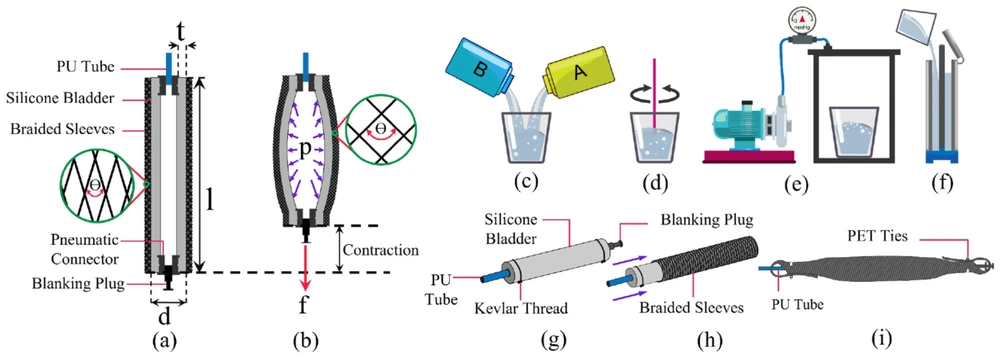
Hybridized neural network inspired behavioural modelling of pneumatic artificial muscles for assistive robotic applications
Industrial Robot
Vol. 50, no. 1, pp. 56–69
Soft robotics/2019–2023 · subsequent publications
From custom pneumatic muscles to characterization, learned models, and intrinsic feedback
CSIR–Central Mechanical Engineering Research Institute
The project
Reliable soft robotic assistance begins before the wearable is assembled. This research develops customizable pneumatic silicone-tube artificial muscles, methods to measure their behavior, models that support task-specific design, and sensing that remains compatible with compliant actuation. The work connects low-pressure fabrication to experimental mechanics, neural surrogates, optimization, and control.
The linked publications represent several related studies rather than a single actuator revision. Carbon-black elastomer, liquid-metal microchannels, and conductive-fabric elements are distinct sensing routes; analytical, phenomenological, and neural models address different questions. Together they form a component and experimental foundation for SoftEXOwalk, other assistive devices, and pneumatic manipulation.
Low-pressure pSTAM construction
A cast silicone bladder inside a braided sleeve converts pressure-driven radial expansion into axial contraction. Custom molds allow bladder dimensions to be varied, while end fittings, cloth protection, Kevlar knots, PET ties, and braided attachment loops complete the assembly. The fabrication approach makes geometry an accessible design variable rather than a fixed property of an off-the-shelf muscle.
Related soft-actuator studies also examine reinforced bending and in-plane finger geometries. These provide useful mechanics and fabrication connections, but remain different actuator families from the contracting pSTAM. The shared theme is making material choice, reinforcement, and geometry part of the engineering design process.
Reconfigurable rigs and physical models
Isobaric, isometric, and constant-load experiments separate the effects of pressure, length, and external load. Perturbation tests identify pressure-dependent spring, damping, and contractile behavior, while step and bandwidth experiments examine transient response. A unified characterization apparatus also supports volume and air-consumption investigations through complementary measurements.
Water displacement, flow-based estimates, and image/blob methods reveal why volume measurements may disagree when a muscle bulges asymmetrically or pneumatic thermodynamics are simplified. Analytical corrections and phenomenological models are evaluated against the measured behavior, creating a physical basis for later data-driven design and control.
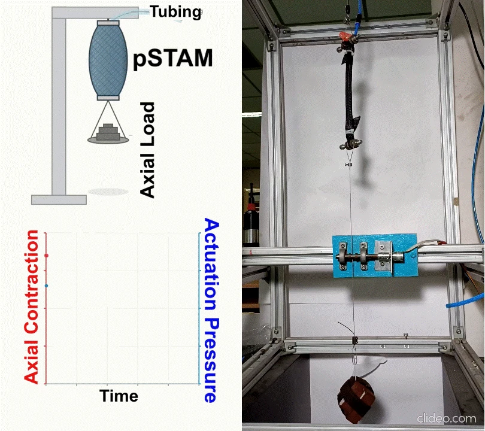
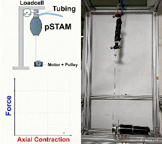
Neural surrogates and constrained optimization
A pool of muscles with different geometries supplies experimental data across pressure, load, contraction, and dynamic conditions. Neural models approximate these relationships so a design search can consider several requirements together. Particle-swarm optimization supports the modeling and application-specific design procedures described in the linked studies.
A motor-driven knee emulator reproduces gait-derived changes in the distance between muscle anchor points. This connects candidate geometry and actuation strategy to the actual stroke and timing required around a joint. The same progression leads toward gait-informed muscle design in SoftEXOwalk, rather than optimizing an isolated maximum-force number.
Distinct soft-sensor routes
Liquid-metal microchannels track strain through resistance changes, with studies comparing axial and circumferential mounting and estimating transmitted force during walking. Conductive fabric offers another route: material characterization, geometry-dependent response, and series sensing elements support compact axial-contraction measurement.
A related serpentine conductive-fabric sensor uses silicone encapsulation to combine stretchability with resistive readout. These studies explore the sensing design space rather than forming interchangeable parts of one prototype. SoftEXOwalk subsequently uses a carbon-black–Ecoflex element for its specific sensorized-muscle and LSTM force-estimation implementation.
Neural assistance to conventional controllers
Pneumatic-muscle behavior changes with pressure, contraction, and load, making a fixed controller difficult to tune across operating conditions. One study combines a neural-network model with feedback for a PAM-driven robotic joint, including tracking and disturbance experiments. Another schedules PID gains through a neural network over different contraction and loading regions.
The learned components address model nonlinearity and operating-point dependence while retaining an explicit feedback-control structure. These experiments are distinct from reinforcement learning: their contribution is data-assisted modeling and control, evaluated through physical step, sinusoidal-tracking, and disturbance responses.
Model-based two-stage pneumatic supply
The two-stage supply uses a primary reservoir to replenish secondary reservoirs that deliver air to pneumatic actuators. A data-driven model determines the target secondary pressure for a requested actuator pressure and rise time. Feedback regulates reservoir recharge, while timed or PWM-controlled valves manage actuator supply and exhaust.
The architecture addresses a shared integration problem in wearable assistance and aerial soft manipulation: stored air, recharge, and actuation timing must be coordinated within an untethered system. The related patent family documents the reservoir, valve and pressure-regulation architecture and its embodiments.
Connected work

Industrial Robot
Vol. 50, no. 1, pp. 56–69
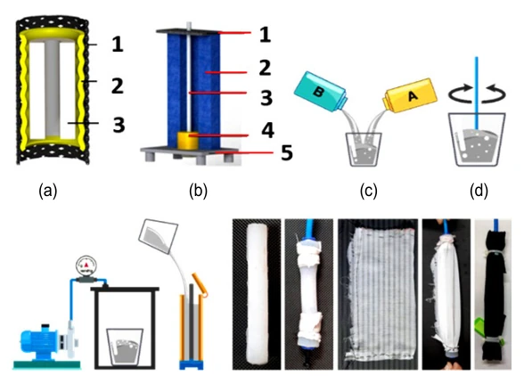
Journal of Mechanical Science and Technology
Vol. 36, no. 9, pp. 4719–4733

U.S. and Indian patent applications
U.S. 18/604,087, filed 13 March 2024; publication US 2024/0309891 A1, 19 September 2024. Related Indian application 202311017238, filed 14 March 2023.
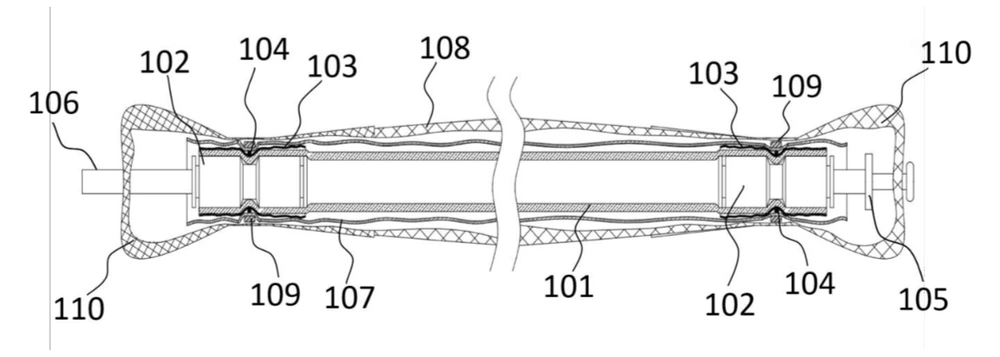
Indian patent application
Application 202211021971; filed 12 April 2022
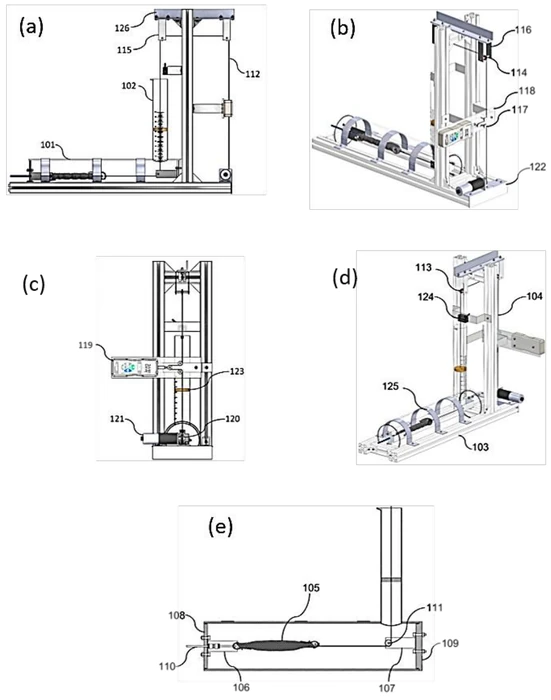
Indian patent application
Application 202211071703; filed 2022
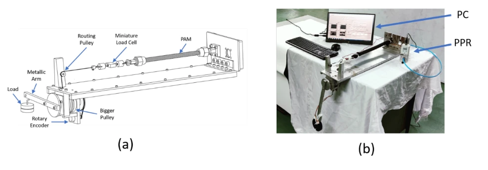
6th International Conference on Advances in Robotics (AIR ’23)
IIT Ropar, India · ACM, article 77, pp. 1–8
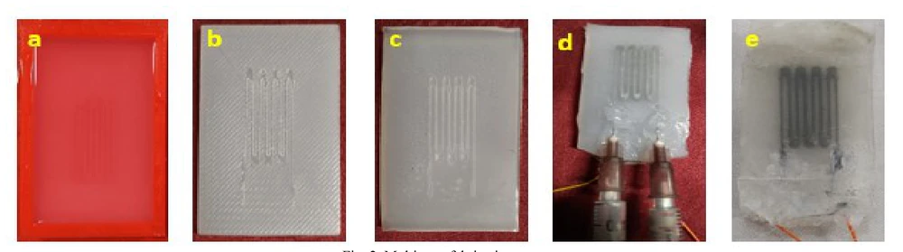
5th IEEE International Conference on Recent Advances and Innovations in Engineering (ICRAIE)
pp. 1–5
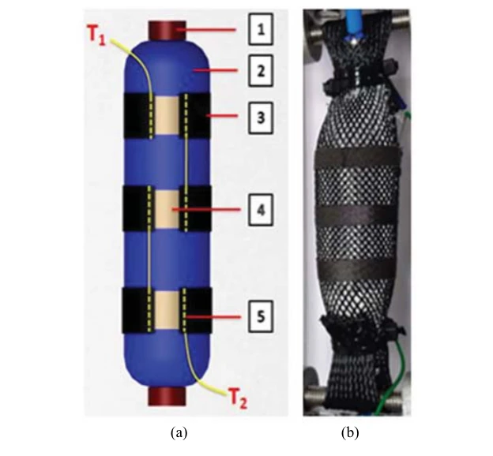
4th International Conference on Electronics, Communication and Aerospace Technology (ICECA)
pp. 339–344
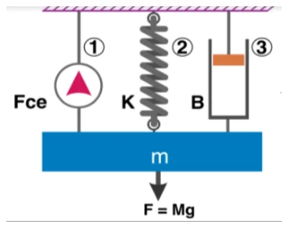
IEEE International Conference on Electronics, Computing and Communication Technologies (CONECCT)
pp. 1–6
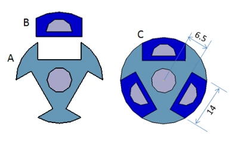
4th International Conference on Advances in Robotics (AIR ’19)
IIT Madras, Chennai, India · ACM, article 58, pp. 1–7
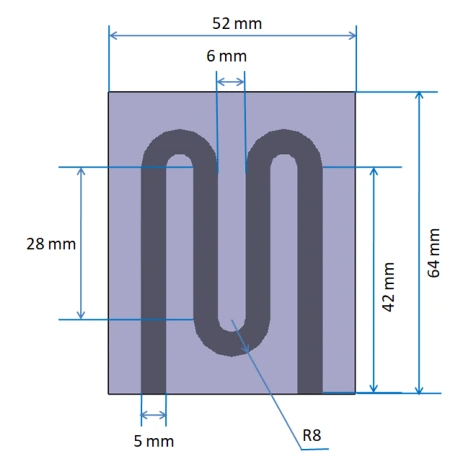
IOP Conference Series: Materials Science and Engineering
Vol. 912, no. 2, article 022009
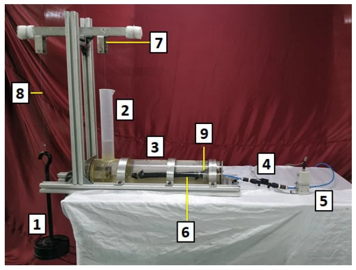
5th IEEE International Conference on Recent Advances and Innovations in Engineering (ICRAIE)
pp. 1–5
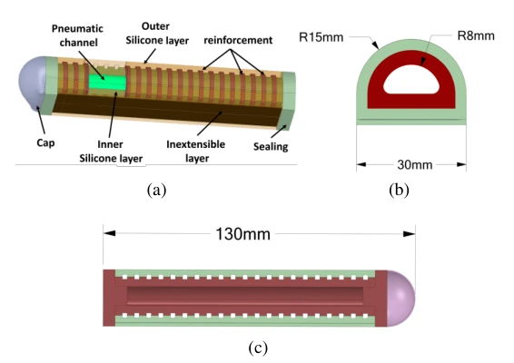
IEEE International Conference on Electronics, Computing and Communication Technologies (CONECCT)
pp. 1–6
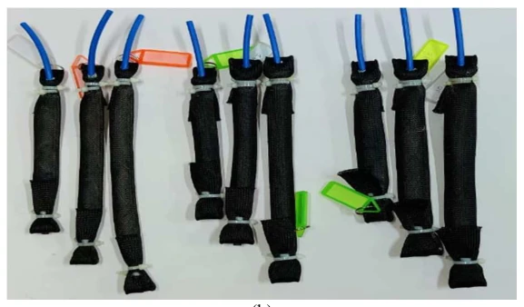
IEEE International Conference on Electronics, Computing and Communication Technologies (CONECCT)
pp. 1–6
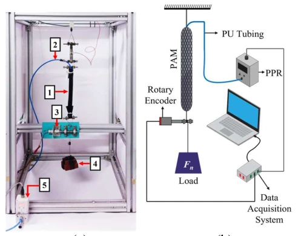
IEEE International Conference on Electronics, Computing and Communication Technologies (CONECCT)
pp. 1–6
Provide the confirmed public design-toolbox repository so its source-code link can be enabled.
Keep exploring

Wearable robotics
Sensorized pneumatic muscles and rapid personalization for bilateral knee-flexion assistance


Soft robotics
Reinforced silicone actuation for multidirectional bending and interaction sensing